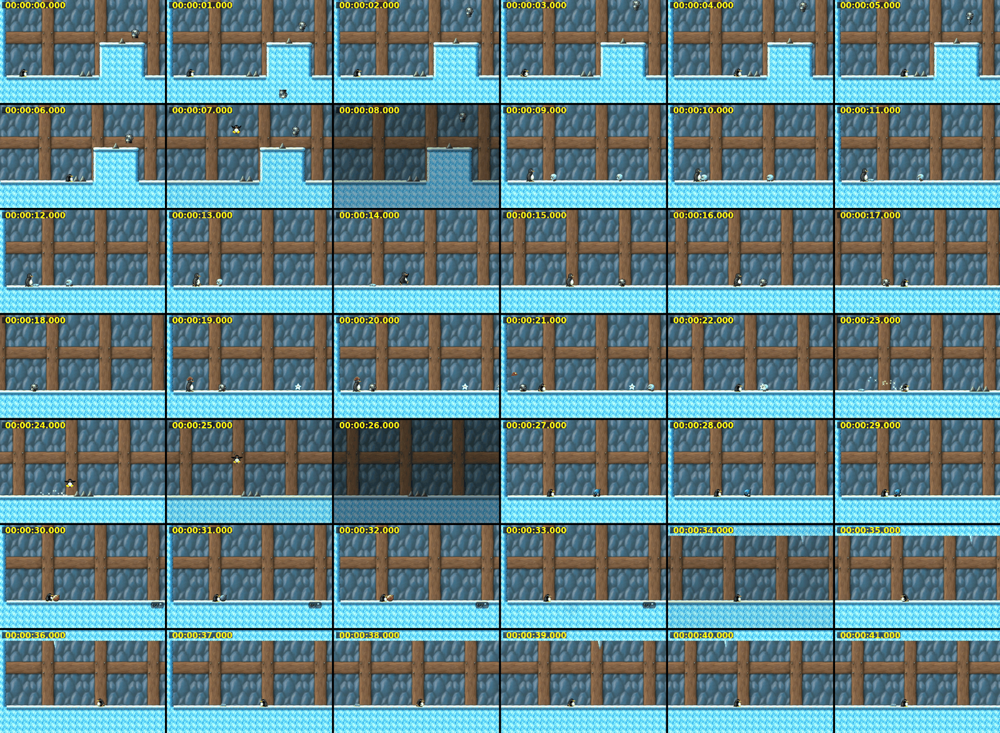
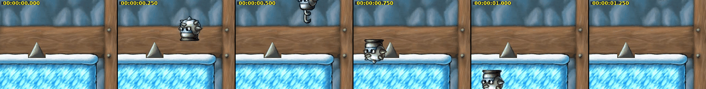
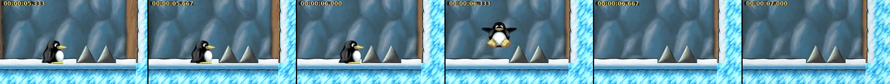
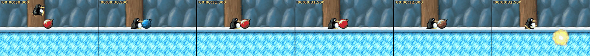
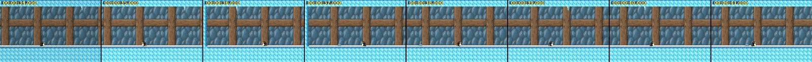

Eval: supertux__supertux_1175_mm
Only Difficulty fails: with-image pass@4 is 2/4 (B3yATpy, fsFz2Ma), and Option A needs exactly 1/4. No-image 0/3 is correct. The other 18 dimensions pass. Symptom Specificity is a non-fail 3: three of the seven defects are left to the clip. Gate, tests and evidence were verified locally (oracle 1.0, nop 0.0, identical re-run, per-part cross-checks).
Scorecard
Every dimension in rubric order. Click a cell to see what is wrong (or the evidence, if it passed).
task.toml 3,845 B, instruction.md 1,199 B, evidence_bundle.json 1,071 B, environment/Dockerfile 4,805 B, environment/assets/ASSET_MANIFEST.json 586 B, solution/fix.patch 3,904 B, solution/solve.sh 349 B, tests/config.json 2,600 B, tests/test.patch 40,868 B, tests/test.sh 10,118 B, tests/verifier.py 6,730 B. The 3 JSON files and task.toml parse; python -m py_compile tests/verifier.py is OK (scripts/bundle_checks.py). recording.mp4 decodes: h264, 1280x800, 24 fps, 41.83 s (ffprobe in the task image). Extra files: environment/bugs/bug_01..05.patch (injected defects, applied and deleted in one Dockerfile RUN) and README.md. Neither is a fail.task112/Attempt4/ holds Tasks/ and Trials/ as sibling root folders (plus the CB Oracle/ and Nop/ runs). Trials/without_images/ has 3 trials and Trials/with_images/ has 4: 7 trials, Option A. All 7 share the task path pattern /home/sandbox/.cache/mm_run/trial_tasks/supertux__supertux_1175_mm/task_with(out)_images./app anyway.Trial evidence: all 3 no-image runs fail. Each one misses the 3 spike-graze tests: the graze is the missing upstream leniency, so no line looks wrong. b6Xarts and bt7R7Gy also miss the 3 blast tests. The asset path
/app/.harbor_assets/recording.mp4 resolves (Dockerfile COPY assets/recording.mp4 /app/.harbor_assets/), and the no-image runs confirm the folder was empty (DKqEdbS / bt7R7Gy: No such file or directory; b6Xarts: ls -la .harbor_assets → total 8).task_type = "temporal_interaction". Every defect is an interaction outcome that plays out over time: when contact counts as harm, how a meeting ends, what a hit costs, what protects Tux while a timer runs, where a blast lands, and when a hanging hazard triggers as Tux approaches. The text describes exactly that ("when some things react to Tux", "while he is protected", "how a meeting … ends"). No mismatch.| file | role field | what the frames show (how verified) | what name/role/instruction claim | true? | agents confused? |
|---|---|---|---|---|---|
recording.mp4 (neutral name) | bug_video | the post-injection base: 5 scenes, edge deaths, side flatten, one-hit strip, star Tux dies on spikes, offset blast, early icicle (contact sheet + zoomed strips; matches nop failing all 10 f2p) | "Five short scenes in one lit ice cave… several of the outcomes do not follow the game's usual rules"; instruction: "(42 seconds) … five short scenes" | yes | no: all 4 runs treat it as the buggy state |
scripts/crosscheck.sh: test.patch applied, then golden minus one part, and only one part, each with an incremental rebuild and all 20 tests):| part (golden hunk) | what the clip shows | f2p it should own | golden minus this part | only this part |
|---|---|---|---|---|
player.cpp collision_tile: 6 px hurtbox (upstream) | Tux dies at the spike edge (scene 1, 6.0-6.3 s) | marginal_graze_is_not_lethal, graze_from_the_other_side_is_not_lethal | fails only: marginal_graze_is_not_lethal, graze_from_the_other_side_is_not_lethal | f2p passing: marginal_graze_is_not_lethal, graze_from_the_other_side_is_not_lethal; p2p 10/10 |
badguy.cpp collision_tile: 6 px hurtbox (upstream) | hopping creature dies landing beside the shelf spike (0.75-1.0 s) | creature_beside_spikes_survives | fails only: creature_beside_spikes_survives | f2p passing: creature_beside_spikes_survives; p2p 10/10 |
badguy.cpp collision: squish test uses Tux's bottom edge (bug_01) | snowball flattened by side contact with big Tux (scene 2, ~10-11 s) | creature_walking_into_tux_hurts_him | fails only: creature_walking_into_tux_hurts_him | f2p passing: creature_walking_into_tux_hurts_him; p2p 10/10 |
player.cpp kill: else if (bug_02) | fire-helmet Tux drops straight to small on one hit (scene 3, ~21-22 s) | powered_up_tux_loses_one_step_per_hit | fails only: powered_up_tux_loses_one_step_per_hit | f2p passing: powered_up_tux_loses_one_step_per_hit; p2p 10/10 |
player.cpp kill: started() not check() (bug_03) | star-protected Tux still dies on the spike patch (scene 3, ~24-25 s) | invincible_tux_is_not_hurt_by_spikes | fails only: invincible_tux_is_not_hurt_by_spikes | f2p passing: invincible_tux_is_not_hurt_by_spikes; p2p 10/10 |
| explosion.cpp ctor: centre the blast on its source (bug_04) | blast drawn below the floor, down-right of the bomb; Tux beside it unhurt (scene 4, 32.5 s) | blast_reaches_left_neighbour, blast_reaches_right_neighbour, blast_reaches_tux_just_above | fails only: blast_reaches_left_neighbour, blast_reaches_right_neighbour, blast_reaches_tux_just_above | f2p passing: blast_reaches_left_neighbour, blast_reaches_right_neighbour, blast_reaches_tux_just_above; p2p 10/10 |
| stalactite.cpp: right range uses SHAKE_RANGE_X (bug_05) | left icicle reacts while Tux is still far to its right; the right one waits (scene 5, 34-41 s) | icicle_ignores_tux_far_to_its_right | fails only: icicle_ignores_tux_far_to_its_right | f2p passing: icicle_ignores_tux_far_to_its_right; p2p 10/10 |
Step 7 (injected defects bug_01..05): skipping any one leaves a real gameplay bug on the core path (squish, damage, star, explosion, icicle), so a fix that skips it is incomplete. Each one's outcome is shown in the clip. Upstream: issue 1175 (Tux grazes a spike edge and dies) matches scene 1.
graze_from_the_other_side tests the mirror case, which the clip doesn't show; a one-sided hurtbox isn't a fix a developer would write, so that is a note, not a mismatch.Trial signals: B3yATpy (pass) recalled upstream ("matches upstream SuperTux's 6px-shrunk hurtbox"; its curl was blocked). fsFz2Ma (pass) measured the clip ("Tux dies with his box about 5px short of the spike") and wrote its own margin in
collision_system.cpp, so the clip carries the fix without recall.temporal_interaction is one of the seven allowed values and fits a video of timed interactions (contact, hits, protection timer, proximity trigger).environment/assets/recording.mp4: sha256 f53c2fa9a3b2edb6…ddc68, 3,553,582 B. ASSET_MANIFEST.json: same file, sha256, bytes, container_path /app/.harbor_assets/recording.mp4. evidence_bundle.json: same sha256/bytes, local_path /app/.harbor_assets/recording.mp4, source_kind captured_from_repo, empty url. instruction.md refers to /app/.harbor_assets/recording.mp4. Dockerfile: COPY assets/recording.mp4 /app/.harbor_assets/. All four agree.harbor_base: git apply --check /solution/fix.patch → OK (cross-check container log). Local oracle solve.sh exit 0 ("Applied fix.patch."). The image build was 14/14 cache hits from the bundle's own environment/.diff --git paths = files_edited = {src/badguy/badguy.cpp, src/badguy/stalactite.cpp, src/object/explosion.cpp, src/object/player.cpp}. No test, doc, lockfile or changeset path.| alternative | source | complete fix of the clip? | test result |
|---|---|---|---|
hurtbox shrunk 6 px in Player + BadGuy collision_tile | golden / B3yATpy | yes | pass 10/10 |
per-axis margin min(SHIFT_DELTA, half size) on hurting tiles in CollisionSystem::collision_tile_attributes | fsFz2Ma | yes | pass 10/10 |
| hurtbox shrink of t px, any t in (~3, ~15.9) | derived from fixture geometry (graze overlap 2.8-3 px; full overlap: 31.8 px box at x 320.1 on a 32 px tile); not run | yes | pass by geometry |
| hurtbox 6 px for Tux, 1 px for creatures | yFgGjzZ | no: the clip's creature overlaps the spike by ≈2.8 px (same as fixture x 291 + 31.8 vs 320), so it still dies | fails creature_beside_spikes_survives (correct) |
strict intersects() (<=) | dPQmVQG | no: tile hurts go through get_tiles_overlapping, not intersects(); Tux still dies in the clip | fails 3 graze tests (correct) |
blast centred another way (pos - size/2, set_pos(pos); move(-size/2)) | plausible | yes | pass: tests only need Tux beside or above the bomb to be hit |
invincibility via get_timeleft() > 0 or started() | plausible | yes | pass: tests read only alive/size |
icicle range with std::abs(dx) < SHAKE_RANGE_X | plausible | yes | pass: both sides use the X range |
one step per hit via early return instead of else if | plausible | yes | pass |
task.toml f2p/p2p = tests/config.json f2p/p2p (identical lists, no overlap). Each of the 20 ids matches exactly one JUnit testcase (HazardBehaviour <name>) in the local oracle and nop reports.--renderer null, no sound) through fixture levels whose init-scripts set positions and print at fixed script times. The checks are outcome-level (alive/dead, resting height ±6 px), so small frame-timing jitter can't flip them. No network and no font-dependent output. test.sh installs nothing: it runs an incremental cmake build and the tests, so the verifier's network_mode = "public" is unused. Local oracle re-run: reward 1.0, per-test outcome identical to the first run; the CB oracle/nop match the local results; p2p is 10/10 in all 7 trials.else, check() vs started(), a blast placed on its own centre, and an X/Y constant swap. Each fix is a one-liner a real developer would write. 2 of 4 video runs solved it end to end, and one of them (fsFz2Ma) didn't use upstream recall.== applying test.patch ==, == running f2p + p2p tests ==, == computing reward ==) and reward= are present; no "could not apply". CB runs: Oracle FYVU89L 1.0 (10/10, 10/10), Nop so3yL2B 0.0 (0/10, 10/10).Delivery gate
Process checks run locally or read from the submitted runs. Each failure is scored under the dimension it belongs to, not as an extra dimension.
git apply --check /solution/fix.patch OK at harbor_base; image build all cache hitsda364b00…; task_manifest.json hashes match all 17 bundle filesTasks/ and Trials/ root siblings, 3 + 4 trialsrecording.mp4 (sha256 f53c2fa9…)Trials
3 no-image runs (pass@3, all must fail) and 4 with-image runs (pass@4, exactly 1 must pass). Rewards come from each run's verifier/reward.txt.
| Trial | Mode | Reward | f2p | p2p | Min | Failed tests |
|---|---|---|---|---|---|---|
task_without_images__DKqEdbS | no-image | 0.0 | 7/10 | 10/10 | 5.7 | marginal_graze_is_not_lethal creature_beside_spikes_survives graze_from_the_other_side_is_not_lethal |
task_without_images__b6Xarts | no-image | 0.0 | 4/10 | 10/10 | 9.0 | marginal_graze_is_not_lethal creature_beside_spikes_survives graze_from_the_other_side_is_not_lethal blast_reaches_left_neighbour blast_reaches_right_neighbour blast_reaches_tux_just_above |
task_without_images__bt7R7Gy | no-image | 0.0 | 4/10 | 10/10 | 9.8 | marginal_graze_is_not_lethal creature_beside_spikes_survives graze_from_the_other_side_is_not_lethal blast_reaches_left_neighbour blast_reaches_right_neighbour blast_reaches_tux_just_above |
task_with_images__B3yATpy | with-image | 1.0 | 10/10 | 10/10 | 35.5 | — |
task_with_images__dPQmVQG | with-image | 0.0 | 7/10 | 10/10 | 13.9 | marginal_graze_is_not_lethal creature_beside_spikes_survives graze_from_the_other_side_is_not_lethal |
task_with_images__fsFz2Ma | with-image | 1.0 | 10/10 | 10/10 | 19.7 | — |
task_with_images__yFgGjzZ | with-image | 0.0 | 9/10 | 10/10 | 28.5 | creature_beside_spikes_survives |
Issues & suggested fixes
Hardening – Difficulty (Model Trial Fails) 2 · [Fail - Trial Threshold Not Met]
What is wrong. With-image pass@4 = 2/4, over the Option A limit of exactly 1. Only the spike-graze tests separate passing from failing runs: every run fixes the injected squish, one-step, star and icicle defects.
Suggested fix. Cheapest route: switch to Option B and run 4 more with-image trials on this same checksum. 2/8 meets Option B (1-2 of 8) if all 4 new runs fail, but at the observed ~50% pass rate that is unlikely (~6-13%). Otherwise make the graze slightly harder for video runs (e.g. drop "although in the clip it does" back toward Attempt1's wording, which scored 0/4), and re-run all 7 trials. Note: this is the only failing dimension. If your team accepts 2/4 (as you mentioned for task108), the task otherwise meets V27.
Instruction – Symptom Specificity 3 · [Non-Fail - Image-carried Symptom]
What is wrong. The exact defect for side-contact flattening, the blast and the icicle is carried by the clip, and the element words are abstract ("something", "things", "harm"). That is a non-fail 3 under V27, not a fail: each aspect is named with its context, and no run confused a bug with intended behaviour.
Suggested fix. Optional, to reach 5: state the squish, one-step, star and icicle defects in words. Every no-image run already fixes those 4 by reading code, so stating them shouldn't change the no-image result. Example: "a creature that walks into Tux from the side is flattened as if he had landed on it; a powered-up Tux loses everything in one hit; Tux under a star still dies on hazards; a hanging hazard reacts while Tux is still far to one side of it". Keep the graze and blast lines as they are. Any change to instruction.md changes the task checksum, so every trial must be re-run.
Dimension details
1. Structure – Task Bundle Files 5 · Pass
| Evidence | All 11 fixed files exist and are non-empty: task.toml 3,845 B, instruction.md 1,199 B, evidence_bundle.json 1,071 B, environment/Dockerfile 4,805 B, environment/assets/ASSET_MANIFEST.json 586 B, solution/fix.patch 3,904 B, solution/solve.sh 349 B, tests/config.json 2,600 B, tests/test.patch 40,868 B, tests/test.sh 10,118 B, tests/verifier.py 6,730 B. The 3 JSON files and task.toml parse; python -m py_compile tests/verifier.py is OK (scripts/bundle_checks.py). recording.mp4 decodes: h264, 1280x800, 24 fps, 41.83 s (ffprobe in the task image). Extra files: environment/bugs/bug_01..05.patch (injected defects, applied and deleted in one Dockerfile RUN) and README.md. Neither is a fail. |
|---|---|
| What is wrong | Nothing found. |
| Suggested fix |
2. Structure – Deliverables & Packaging 5 · Pass
| Evidence | task112/Attempt4/ holds Tasks/ and Trials/ as sibling root folders (plus the CB Oracle/ and Nop/ runs). Trials/without_images/ has 3 trials and Trials/with_images/ has 4: 7 trials, Option A. All 7 share the task path pattern /home/sandbox/.cache/mm_run/trial_tasks/supertux__supertux_1175_mm/task_with(out)_images. |
|---|---|
| What is wrong | Nothing found. Non-graded note: this review read the extracted folders; ship Tasks/ and Trials/ as separate .tar.gz archives on submission. |
| Suggested fix |
3. Instruction – Requires Visual Evidence 5 · Pass
| Evidence | Read without the video, the text lists five aspects ("how close something has to come before it is harmed", "how a meeting between Tux and a creature ends", "what a hit costs Tux, and what keeps him safe", "where some harm lands", "when some things react to Tux") and general rules. It never names an object, file, function, direction, place or time. The leak scan finds no repo name, URL, issue/PR number, file, class or mechanism (only "edge" and "else" in plain English). "Tux" is the game's hero, which the agent sees in /app anyway.Trial evidence: all 3 no-image runs fail. Each one misses the 3 spike-graze tests: the graze is the missing upstream leniency, so no line looks wrong. b6Xarts and bt7R7Gy also miss the 3 blast tests. The asset path /app/.harbor_assets/recording.mp4 resolves (Dockerfile COPY assets/recording.mp4 /app/.harbor_assets/), and the no-image runs confirm the folder was empty (DKqEdbS / bt7R7Gy: No such file or directory; b6Xarts: ls -la .harbor_assets → total 8). |
|---|---|
| What is wrong | Nothing found. |
| Suggested fix |
4. Instruction – Symptom Specificity 3 · Non-Fail
[Non-Fail - Image-carried Symptom]
| Evidence | The prompt names each defective aspect and gives an expected rule, with a pointer to the clip for the graze and the icicle. For 3 of 7 defects (side-contact flattening, blast offset, early icicle) the exact defect is only in the clip:
With-image trajectories: all 4 runs read the edge death as a bug, and none took it for intended behaviour. B3yATpy: "Scene 1: small Tux dies just from brushing the spike's edge". dPQmVQG: "Small Tux dies when he only touches the outer edge of a spike, so that's the 'edge' bug". fsFz2Ma: "Jumpy dies grazing a spike, and Tux dies standing next to them". yFgGjzZ: "walking Tux dies with his bbox right edge at ~382 while the spike tile starts at 384 — no real contact". All 4 also fixed the 5 injected defects. The two failures are wrong fixes, not misreadings: dPQmVQG made intersects() strict (not on the tile-hurt path), and yFgGjzZ shrank Tux's hurtbox by 6 px but the creature's by only 1 px. | ||||||||||||||||||||||||||||||||||||||||||||||||||||||||
|---|---|---|---|---|---|---|---|---|---|---|---|---|---|---|---|---|---|---|---|---|---|---|---|---|---|---|---|---|---|---|---|---|---|---|---|---|---|---|---|---|---|---|---|---|---|---|---|---|---|---|---|---|---|---|---|---|---|
| What is wrong | The exact defect for side-contact flattening, the blast and the icicle is carried by the clip, and the element words are abstract ("something", "things", "harm"). That is a non-fail 3 under V27, not a fail: each aspect is named with its context, and no run confused a bug with intended behaviour. | ||||||||||||||||||||||||||||||||||||||||||||||||||||||||
| Suggested fix | Optional, to reach 5: state the squish, one-step, star and icicle defects in words. Every no-image run already fixes those 4 by reading code, so stating them shouldn't change the no-image result. Example: "a creature that walks into Tux from the side is flattened as if he had landed on it; a powered-up Tux loses everything in one hit; Tux under a star still dies on hazards; a hanging hazard reacts while Tux is still far to one side of it". Keep the graze and blast lines as they are. Any change to instruction.md changes the task checksum, so every trial must be re-run. |
5. Instruction – Task Type 5 · Pass
| Evidence | task_type = "temporal_interaction". Every defect is an interaction outcome that plays out over time: when contact counts as harm, how a meeting ends, what a hit costs, what protects Tux while a timer runs, where a blast lands, and when a hanging hazard triggers as Tux approaches. The text describes exactly that ("when some things react to Tux", "while he is protected", "how a meeting … ends"). No mismatch. |
|---|---|
| What is wrong | Nothing found. |
| Suggested fix |
6. Image – Evidence Quality 5 · Pass
| Evidence | Names and roles:
scripts/crosscheck.sh: test.patch applied, then golden minus one part, and only one part, each with an incremental rebuild and all 20 tests):
Step 7 (injected defects bug_01..05): skipping any one leaves a real gameplay bug on the core path (squish, damage, star, explosion, icicle), so a fix that skips it is incomplete. Each one's outcome is shown in the clip. Upstream: issue 1175 (Tux grazes a spike edge and dies) matches scene 1. graze_from_the_other_side tests the mirror case, which the clip doesn't show; a one-sided hurtbox isn't a fix a developer would write, so that is a note, not a mismatch.Trial signals: B3yATpy (pass) recalled upstream ("matches upstream SuperTux's 6px-shrunk hurtbox"; its curl was blocked). fsFz2Ma (pass) measured the clip ("Tux dies with his box about 5px short of the spike") and wrote its own margin in collision_system.cpp, so the clip carries the fix without recall. | ||||||||||||||||||||||||||||||||||||||||||||||||||||
|---|---|---|---|---|---|---|---|---|---|---|---|---|---|---|---|---|---|---|---|---|---|---|---|---|---|---|---|---|---|---|---|---|---|---|---|---|---|---|---|---|---|---|---|---|---|---|---|---|---|---|---|---|---|
| What is wrong | Nothing found. Non-graded: the clip shows grazes from one side only (Tux and the creature approach from the left). | ||||||||||||||||||||||||||||||||||||||||||||||||||||
| Suggested fix |
7. Metadata – task_type 5 · Pass
| Evidence | temporal_interaction is one of the seven allowed values and fits a video of timed interactions (contact, hits, protection timer, proximity trigger). |
|---|---|
| What is wrong | Nothing found. |
| Suggested fix |
8. Evidence – Chain Consistency 5 · Pass
| Evidence | Disk environment/assets/recording.mp4: sha256 f53c2fa9a3b2edb6…ddc68, 3,553,582 B. ASSET_MANIFEST.json: same file, sha256, bytes, container_path /app/.harbor_assets/recording.mp4. evidence_bundle.json: same sha256/bytes, local_path /app/.harbor_assets/recording.mp4, source_kind captured_from_repo, empty url. instruction.md refers to /app/.harbor_assets/recording.mp4. Dockerfile: COPY assets/recording.mp4 /app/.harbor_assets/. All four agree. |
|---|---|
| What is wrong | Nothing found. |
| Suggested fix |
9. Golden Fix – Applies Cleanly 5 · Pass
| Evidence | In the task image at harbor_base: git apply --check /solution/fix.patch → OK (cross-check container log). Local oracle solve.sh exit 0 ("Applied fix.patch."). The image build was 14/14 cache hits from the bundle's own environment/. |
|---|---|
| What is wrong | Nothing found. |
| Suggested fix |
10. Golden Fix – Source-Only Scope 5 · Pass
| Evidence | diff --git paths = files_edited = {src/badguy/badguy.cpp, src/badguy/stalactite.cpp, src/object/explosion.cpp, src/object/player.cpp}. No test, doc, lockfile or changeset path. |
|---|---|
| What is wrong | Nothing found. |
| Suggested fix |
11. Tests – Implementation Overfit 5 · Pass
| Evidence | Assertions read only outcomes: Tux's y within ±6 px of the small (289.2) or big (257.2) resting height, or "down" (far from both), and whether a creature's dead-script printed. There is no exact count, ordering, string, float equality or log text. Equivalence table:
| ||||||||||||||||||||||||||||||||||||||||
|---|---|---|---|---|---|---|---|---|---|---|---|---|---|---|---|---|---|---|---|---|---|---|---|---|---|---|---|---|---|---|---|---|---|---|---|---|---|---|---|---|---|
| What is wrong | Nothing found. | ||||||||||||||||||||||||||||||||||||||||
| Suggested fix |
12. Tests – f2p/p2p Identifier Validity 5 · Pass
| Evidence | task.toml f2p/p2p = tests/config.json f2p/p2p (identical lists, no overlap). Each of the 20 ids matches exactly one JUnit testcase (HazardBehaviour <name>) in the local oracle and nop reports. |
|---|---|
| What is wrong | Nothing found. |
| Suggested fix |
13. Tests – p2p Classification 5 · Pass
| Evidence | All 10 p2p pass on local nop (10/10) and local oracle (10/10), and in all 7 trials (10/10 each). |
|---|---|
| What is wrong | Nothing found. |
| Suggested fix |
14. Tests – Discriminating (f2p) 5 · Pass
| Evidence | All 10 f2p fail on local nop (0/10 pass) and pass on local oracle (10/10). The leave-one-out cross-check (dim 6) shows each f2p is owned by exactly one golden part. |
|---|---|
| What is wrong | Nothing found. |
| Suggested fix |
15. Tests – Determinism 5 · Pass
| Evidence | The runner drives the real binary (--renderer null, no sound) through fixture levels whose init-scripts set positions and print at fixed script times. The checks are outcome-level (alive/dead, resting height ±6 px), so small frame-timing jitter can't flip them. No network and no font-dependent output. test.sh installs nothing: it runs an incremental cmake build and the tests, so the verifier's network_mode = "public" is unused. Local oracle re-run: reward 1.0, per-test outcome identical to the first run; the CB oracle/nop match the local results; p2p is 10/10 in all 7 trials. |
|---|---|
| What is wrong | Nothing found. |
| Suggested fix |
16. Hardening – Difficulty (Model Trial Fails) 2 · Fail
[Fail - Trial Threshold Not Met]
| Evidence | No-image: 0/3 pass (DKqEdbS 7/10 f2p, b6Xarts 4/10, bt7R7Gy 4/10), which is correct. With-image: 2/4 pass (B3yATpy 1.0, fsFz2Ma 1.0; dPQmVQG 0.0 at 7/10, yFgGjzZ 0.0 at 9/10). Option A needs exactly 1/4. Every trial is claude-opus-5-5 via claude-code. The with-image checksum da364b00… equals the CB oracle/nop checksum; the no-image checksum 67ea7c05… is the harbor no-asset variant. Run time (informational): with-image 35.5 / 13.9 / 19.7 / 28.5 min; no-image 5.7 / 9.0 / 9.8 min. |
|---|---|
| What is wrong | With-image pass@4 = 2/4, over the Option A limit of exactly 1. Only the spike-graze tests separate passing from failing runs: every run fixes the injected squish, one-step, star and icicle defects. |
| Suggested fix | Cheapest route: switch to Option B and run 4 more with-image trials on this same checksum. 2/8 meets Option B (1-2 of 8) if all 4 new runs fail, but at the observed ~50% pass rate that is unlikely (~6-13%). Otherwise make the graze slightly harder for video runs (e.g. drop "although in the clip it does" back toward Attempt1's wording, which scored 0/4), and re-run all 7 trials. Note: this is the only failing dimension. If your team accepts 2/4 (as you mentioned for task108), the task otherwise meets V27. |
17. Hardening – Real & Feasible 5 · Pass
| Evidence | The upstream defect (issue 1175 / PR 1741: hazards hurt on a 1 px graze) is real. The 5 injected defects are believable one-token slips: the wrong box edge in the squish test, a lost else, check() vs started(), a blast placed on its own centre, and an X/Y constant swap. Each fix is a one-liner a real developer would write. 2 of 4 video runs solved it end to end, and one of them (fsFz2Ma) didn't use upstream recall. |
|---|---|
| What is wrong | Nothing found. |
| Suggested fix |
18. Gate – Oracle/Nop 5 · Pass
| Evidence | Local: oracle 1.0 (10/10 f2p, 10/10 p2p), nop 0.0 (0/10, 10/10), oracle re-run 1.0, identical per test. Stage banners (== applying test.patch ==, == running f2p + p2p tests ==, == computing reward ==) and reward= are present; no "could not apply". CB runs: Oracle FYVU89L 1.0 (10/10, 10/10), Nop so3yL2B 0.0 (0/10, 10/10). |
|---|---|
| What is wrong | Nothing found. |
| Suggested fix |
19. Unauditable 5 · Pass
| Evidence | A complete, auditable bundle with all runs. |
|---|---|
| What is wrong | Nothing found. |
| Suggested fix |
Visual evidence




